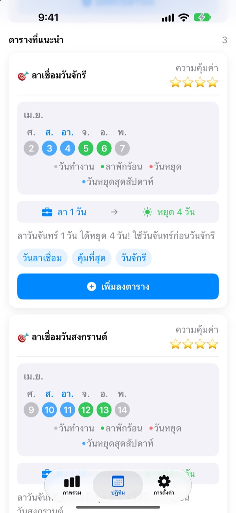
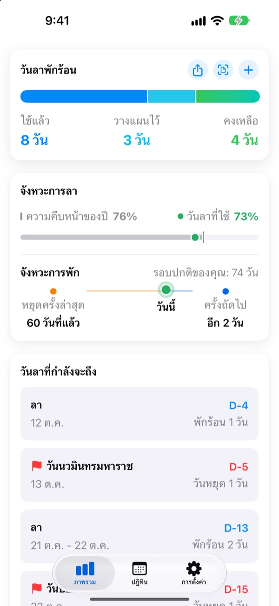
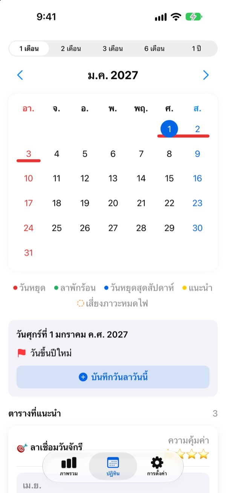
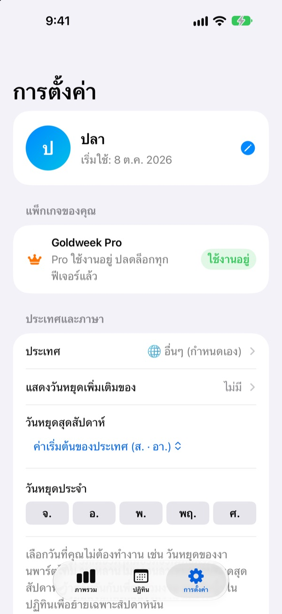

ลาไม่กี่วัน
ได้หยุดยาว
Goldweek จับคู่วันหยุดกับวันเสาร์อาทิตย์ แล้วบอกชัดๆ ว่าควรลาวันไหนถึงจะได้หยุดยาวที่สุด ไม่ต้องเปิดปฏิทินนั่งนับทีละหน้าอีกต่อไป
ดาวน์โหลดฟรี การบันทึกวันลาและดูคำแนะนำยังใช้ฟรีตลอด

เหนื่อยกับการนั่งนับวันในปฏิทินไหม
วันพฤหัสเป็นวันหยุด จะลาวันศุกร์ดีไหม หรือเก็บไว้ต่อกับวันหยุดยาวเดือนหน้า เปิดปฏิทินไปมาจนสุดท้ายก็ลาวันไหนก็ได้ แล้วพอสิ้นปีวันลาที่เหลือก็หายไปเฉยๆ Goldweek คำนวณให้ แล้วแสดงวันที่ทำให้วันลาคุ้มที่สุด
เห็นวันลาที่เหลือในพริบตา
วันลาทั้งหมด ที่ใช้ไป และที่เหลือ อยู่ในหน้าเดียว ข้างๆ ยังบอกว่าปีนี้ผ่านไปเท่าไรแล้วเทียบกับวันลาที่ใช้ไป จะได้รู้ทันทีว่าเก็บวันลาไว้มากเกินไปหรือเปล่า
ไม่ต้องเปิดแอปก็ดูวันลาที่เหลือและวันหยุดที่ใกล้มาถึงได้จากวิดเจ็ตบนหน้าจอโฮม

ลงวันลาได้ในปฏิทินเลย
วันหยุด วันลา และวันหยุดยาวที่แนะนำ แสดงเป็นสีในปฏิทิน แตะวันที่เพื่อเพิ่มหรือแก้วันลาได้ทันที รวมถึงลาครึ่งวัน ลาหนึ่งในสี่วัน หรือลาเป็นชั่วโมง
ถ่ายรูปหน้าประวัติการลาจากระบบของบริษัท แล้วดึงข้อมูลเก่าเข้ามาได้ในครั้งเดียว

ตามประเทศและรูปแบบงานของคุณ
มีวันหยุดของ 42 ประเทศ ทั้งเอเชีย ยุโรป และอเมริกา ประเทศที่วันหยุดต่างกันตามรัฐหรือภูมิภาคก็เลือกพื้นที่ของคุณได้ ส่วนประเทศที่ยังไม่มีในรายการ เช่น ประเทศไทย ก็ใส่วันหยุดเองได้
เลือกวันหยุดสุดสัปดาห์ วันแรกของสัปดาห์ และรูปแบบงานแบบประจำ พาร์ตไทม์ หรือเป็นกะได้ด้วย

เริ่มได้ใน 3 ขั้นตอน
- 1
บอกว่าคุณทำงานที่ไหน
เปิดครั้งแรก เลือกประเทศและจำนวนวันลาต่อปี หรือใส่วันหยุดเองถ้ายังไม่มีประเทศของคุณ
- 2
เลือกคำแนะนำ
ในแท็บปฏิทินมีวันหยุดยาวที่แนะนำ เพิ่มอันที่ชอบลงตารางได้เลย
- 3
บันทึกวันลา
แตะวันที่ หรือดึงประวัติการลาจากรูปภาพ
คำนวณแบบนี้
- ลาเต็มวัน
- หัก 1 วัน
- ลาครึ่งวัน
- หัก 0.5 วัน
- ลาหนึ่งในสี่วัน
- หัก 0.25 วัน
- ลาเป็นชั่วโมง
- หักตามชั่วโมงทำงานของวันนั้น
- ลาป่วย ลากิจตามสิทธิ์ ไปราชการ
- ไม่หักจากวันลาที่เหลือ
- วันลาโบนัส
- วันหยุดชดเชยหรือวันลารางวัลที่ได้เพิ่ม แยกเก็บพร้อมวันหมดอายุ (Pro)
จำนวนวันลาต่อปีและเดือนที่เริ่มนับปีวันลา เปลี่ยนได้ทุกเมื่อในการตั้งค่า
พักผ่อนให้ดีใช้ฟรี อยากให้ช่วยวางแผนค่อยจ่าย
ฟรี
- บันทึกลาเต็มวัน ครึ่งวัน หนึ่งในสี่วัน และรายชั่วโมง พร้อมวันลาที่เหลือ
- วันหยุดของ 42 ประเทศ วันหยุดของคุณเองและวันปิดเทอม
- ดูคำแนะนำทั้งหมดของปีนี้ และเพิ่มลงตารางได้ 3 รายการ
- คำแนะนำเรื่องช่วงพัก การแจ้งเตือน และวิดเจ็ต
- เพิ่มวันลาจากรูปภาพ
- สำรองข้อมูล iCloud และแชร์ตารางกับครอบครัว
Plus และ Pro
- Plus: วางแผนวันลาให้คุ้มที่สุดทั้งปี
- Plus: เพิ่มคำแนะนำได้ไม่จำกัด รวมถึงของปีที่แล้วและปีหน้า
- Plus: ส่งวันลาไปยังแอปปฏิทิน
- Pro: ทุกอย่างใน Plus พร้อมวันลาโบนัส เพดานรายปีและการยกยอดตามประเภท
- Pro: นำเข้าปฏิทินโรงเรียน และตรวจหาปฏิทินอัตโนมัติ
- Pro: หยุดพร้อมกันทั้งครอบครัว และวันสำคัญของครอบครัว
ทุกระดับเลือกได้ทั้งสมัครสมาชิกรายปี หรือซื้อครั้งเดียวใช้ได้ตลอด
การสมัครสมาชิกรายปีจะต่ออายุอัตโนมัติ หากไม่ยกเลิกอย่างน้อย 24 ชั่วโมงก่อนสิ้นสุดรอบ จัดการได้ทุกเมื่อที่ การตั้งค่า > บัญชี Apple > การสมัครสมาชิก
คำถามที่พบบ่อย
วันลาคำนวณไม่ตรง
ตรวจดูเดือนที่เริ่มนับปีวันลาและจำนวนวันลาทั้งหมดในการตั้งค่า ลาครึ่งวัน (0.5) และหนึ่งในสี่วัน (0.25) จะถูกหักให้อัตโนมัติ ส่วนประเภทที่ไม่หักวันลา เช่น ลาป่วย ลากิจตามสิทธิ์ หรือไปราชการ จะไม่กระทบวันลาที่เหลือ ถ้ายังไม่ตรง ส่งอีเมลบอกเราได้เลย
วันลาไม่ขึ้นในปฏิทิน
วันลาที่ยกเลิกแล้วจะไม่แสดงในปฏิทิน ตรวจดูสถานะของรายการนั้นในหน้าจัดการวันลา การอัปเดตเป็นเวอร์ชันล่าสุดก็อาจช่วยได้
เพิ่มวันลาโบนัสอย่างไร
แตะ + ในแท็บภาพรวมเพื่อเปิดหน้าจัดการวันลา แล้วเพิ่มในส่วนวันลาโบนัสด้านล่าง เลือกประเภท (วันหยุดชดเชย วันลารางวัล วันลาพักฟื้น ฯลฯ) ใส่จำนวนวันและวันหมดอายุ (ไม่บังคับ) วันลาโบนัสจะแยกจากวันลาปกติ
ซื้อแล้วแต่ฟีเจอร์ยังไม่ปลดล็อก
แตะกู้คืนการซื้อที่ด้านล่างของแท็บการตั้งค่า ระบบจะกู้คืนการซื้อด้วยบัญชี Apple ที่ลงชื่อเข้า App Store อยู่ ถ้ายังไม่ได้ ส่งอีเมลหาเรา
ลบแอปแล้วข้อมูลจะหายไหม
ข้อมูลเก็บอยู่ในเครื่อง ลบแอปแล้วข้อมูลจะหายทั้งหมด เปิดสำรองข้อมูล iCloud ไว้เพื่อให้มีสำเนาที่กู้คืนได้ภายหลัง
เพิ่มหรือซ่อนวันหยุดเองได้ไหม
ได้ ไปที่วันหยุดและปิดเทอมในการตั้งค่า เพื่อเพิ่มวันหยุดของคุณเองหรือซ่อนวันหยุดเริ่มต้น
รองรับประเทศไหนบ้าง
Goldweek มีวันหยุดของ 42 ประเทศ เลือกประเทศในการตั้งค่า (และพื้นที่ สำหรับประเทศที่วันหยุดต่างกันตามพื้นที่) ปฏิทินจะอัปเดตทันที ตอนนี้ยังไม่มีวันหยุดของประเทศไทยในรายการ ใส่วันหยุดเองได้ หรือส่งความคิดเห็นจากในแอปเพื่อขอให้รองรับ
ข้อมูลของฉันเก็บไว้ที่ไหน
สิ่งที่คุณบันทึกอยู่ในเครื่องและ iCloud ของคุณเองเท่านั้น นักพัฒนาได้รับแค่สถิติการใช้งานแบบไม่ระบุตัวตน รายงานข้อผิดพลาดแบบไม่ระบุตัวตน และความคิดเห็นที่คุณส่งมาเอง
ปัญหาที่ยังไม่ได้รับคำตอบด้านบน ไอเดีย หรือบั๊ก ส่งมาที่ leeo@kakao.com ปกติเราตอบภายใน 1 ถึง 2 วันทำการ